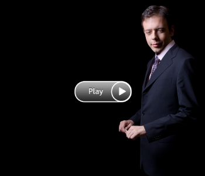

biography
calendar
news & press
media
photos
testimonials
contact

Jeffrey Leppendorf:
The Art of Eating
May, 2010
2:48 min
J.S. Bach
Coffee Cantata
May, 2010
3:10 min
Giuseppe Verdi:
Rigoletto
November, 2007
4:21 min
Caught in the Act:
Brooklyn Independent Television
Regina Opera
7:56 min
Gaetano Donizetti:
Lucia di Lammermoor
November, 2008
8:33 min
Johannes Brahms: Symphony No. 1
I.
Un poco sostenuto -- Allegro -- Meno Allegro
June, 2008
3:48 min